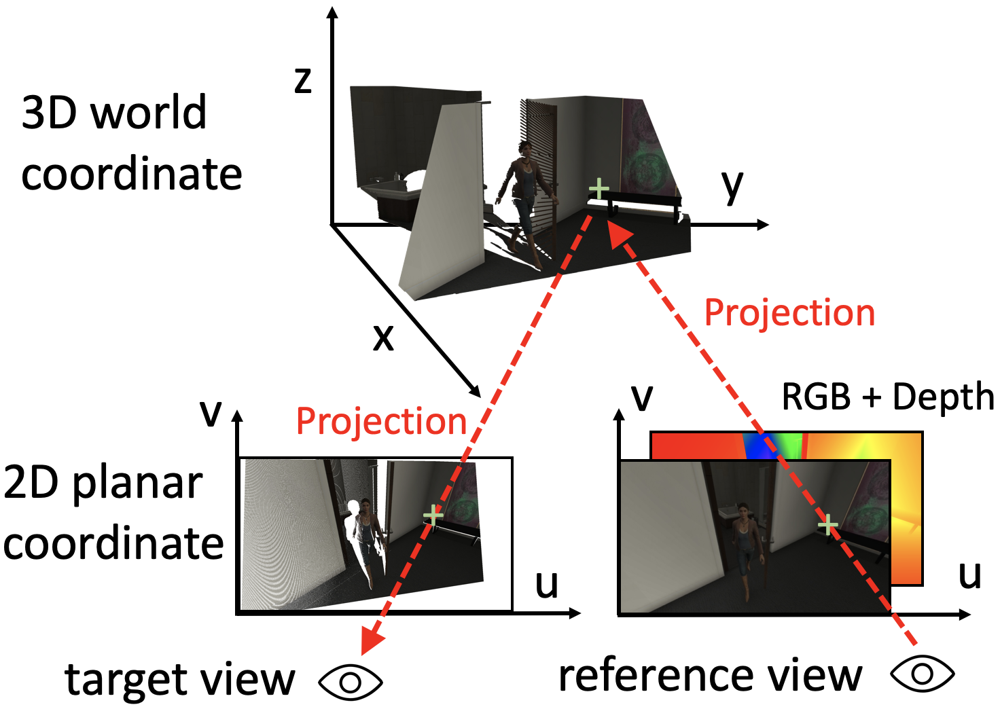

|
NetVideo Group The NetVideo Group (NVG) locates at Peking University, China. Our recent research focuses on the big challenges of future VR/AR Video System and Satellite Network with machine-learning and optimization tools. |

|
Open SourceOur recent open source projects: |

|
ActRay: Online Active Ray Sampling for Radiance Fields
Jiangkai Wu, Liming Liu, Yunpeng Tan, Quanlu Jia, Haodan Zhang, Xinggong Zhang*, ACM SIGGRAPH Asia'23 project page / video / paper How can we further accelerate the trainig process of NeRF? Is there any alogrithm that can speed up all NeRF method? Here we give the answer - Actray. |
|

|
ZGaming: Zero-Latency 3D Cloud Gaming by Image Prediction
Jiangkai Wu, Yu Guan, Qi Mao, Yong Cui, Zongming Guo, Xinggong Zhang*, ACM SIGCOMM'23 project page / video / paper ZGaming is a novel 3D cloud gaming system based on image prediction, in order to eliminate the interactive latency in traditional cloud gaming systems. |
|
Template borrowed from Jon Barron. |